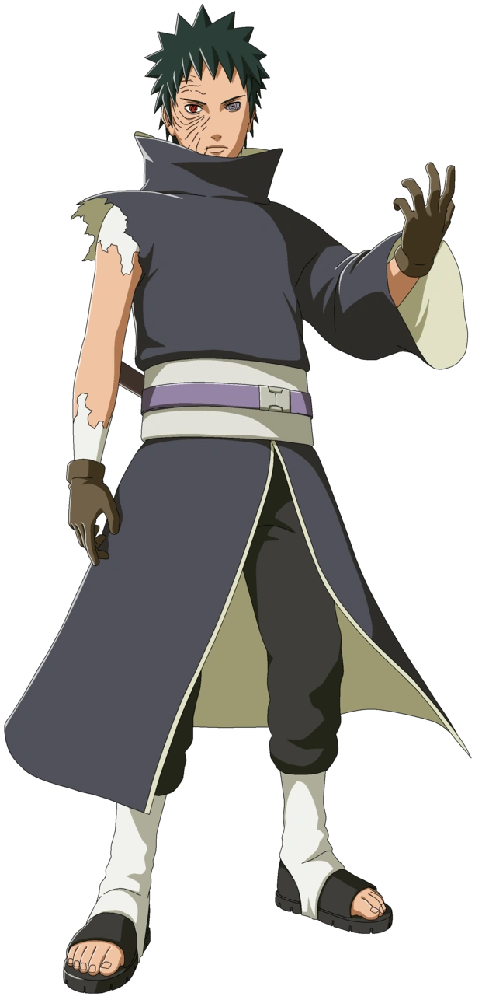

Obito Uchiha was a member of the Uchiha Clan who dreamed of becoming Hokage. During a mission, he was believed to have died while saving his teammates. However, he survived and was later manipulated by Madara Uchiha. After witnessing Rin's death, Obito lost hope in the world and became the masked man known as Tobi. He played a major role in the Fourth Great Ninja War before ultimately returning to the side of good.
Obito dreamed of becoming Hokage and protecting the people he cared about. Later, he sought to create a dream world through the Infinite Tsukuyomi where no one would experience pain or loss.
"Those who break the rules are scum, but those who abandon their friends are worse than scum."